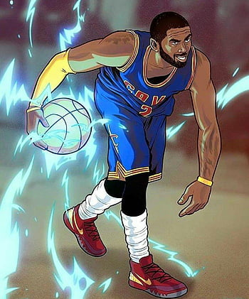
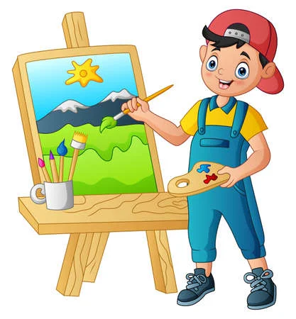

Hobbies :

BasketBall

Painting

As a passionate computer science student, I am constantly amazed by the power of technology and its ability to transform the world we live in. Currently in my journey towards a Bachelor's degree in Computer Science, I have been exposed to an array of programming languages like C, C++, Python, HTML and CSS, which have allowed me to build a strong foundation in software development. Through coursework and personal projects, I have had the opportunity to explore fascinating concepts such as algorithms and data structures, enabling me to approach problem-solving with a systematic mindset. Moreover, I have actively sought out extracurricular activities to expand my network and develop critical skills such as communication, teamwork, leadership, and time management. The field of computer science is constantly evolving, and I am excited to embrace new challenges and contribute to innovations that positively impact society.
Trekking offers me a unique opportunity to disconnect from the busy world and immerse myself in the tranquility of nature. I enjoy the physical and mental challenges it presents, pushing me to overcome obstacles and discover my inner strength. The breathtaking landscapes and stunning vistas along the trekking trails provide a constant source of inspiration and awe
I have achieved strong scores in the IELTS across all sections. In Reading, I obtained a score of 7, demonstrating my solid comprehension skills. Additionally, I achieved a score of 7.5 in Listening, showcasing my ability to understand diverse accents and capture detailed information. In Writing and Speaking, I received scores of 6.5, indicating my proficiency in expressing my ideas in writing and engaging in effective verbal communication.
My IIMUN experiences in Surat and Mumbai were incredible opportunities to engage in passionate debates, collaborate with diverse delegates, and broaden my understanding of global issues. Attending the IIMUN conferences exposed me to a dynamic environment where I developed strong negotiation skills, enhanced my public speaking abilities, and fostered lasting connections with delegates from various schools.
Technology is constantly evolving, and staying updated with the latest trends and advancements is crucial for success in the field. To stay abreast of new technologies and techniques, I plan to explore online resources, and participate in relevant workshops and seminar which would also help me stay competitive in the job market.

I am passionate about using my skills to make a positive impact on society. I aim working on projects that address social issues, develop technology for sustainable solutions, or use technology to bridge societal gaps and improve people's lives.
Building a strong professional network is essential for career growth and opportunities. My small future goals include actively participating in professional communities, attending industry events, joining relevant organizations, and collaborating with peers and experts to foster learning, mentorship, and potential job prospects.